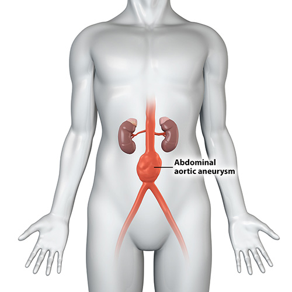

The aorta is the largest blood vessel in the body. An abdominal aortic aneurysm that ruptures can cause life-threatening bleeding.
Types of Aneurysm
Abdominal Aortic Aneurysm
An abdominal aortic aneurysm is an enlarged area in the lower part of the body's main artery, called the aorta. The aorta runs from the heart through the centre of the chest and belly area, called the abdomen. Treatment depends on the size of the aneurysm and how fast it's growing. Treatment varies from regular health check-ups and imaging tests to emergency surgery.
Abdominal Aortic Aneurysm Symptoms
Abdominal aortic aneurysms often grow slowly without noticeable symptoms. This makes them difficult to detect. Some aneurysms never rupture. Many starts small and stay small. Others grow larger over time, sometimes quickly.